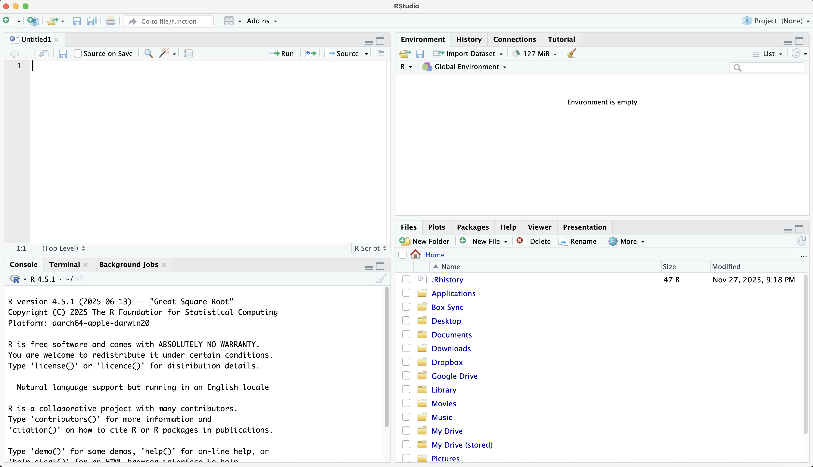

1 Using R and RStudio
R is an “open-source” statistical software package that is free of charge to download, install, and use. You will download this program to your computer. To run R on your computer, you will also need to download and install a program called “RStudio,” which is also free. As Ismay and Kim (2020) put it, think of R as the “stuff” under the hood of and underneath your car (e.g., engine, breaks) and RStudio as your dashboard and levers inside the car. You will use RStudio to run R. Once you have downloaded and installed R, you will never need to open it again (just like you may have never opened the hood of your car to inspect the engine). Instead, you will perform all statistical computing commands using RStudio. Every once in a while (perhaps once per year), you will need to update your versions of R and RStudio on your computer. I will go over procedures for this below (Section 1.7).
As a statistical program, RStudio runs on “packages.” As Ismay and Kim (2020) put it, think of RStudio as your smart phone and think of these packages as apps that you download and use. RStudio includes what are known as “base” packages that are available to use once you install R and RStudio. These include some basic commands for summarizing variables and doing regression analysis. Moreover, most of the commands a typical RStudio user will employ involve add-on packages that you need to install and load. Once you install a package, it stays on your computer. However, every time you open RStudio (after closing it previously), you need to load packages that are required to execute your commands. I will discuss this below.
This book will also discuss a program called Quarto, which is available to use in RStudio. Quarto allows users to create .pdf and .html documents that integrate graphical and statistical results and output with your narrative explaining your results—all in a single document. Users can actually write an entire paper using Quarto that includes your writing and your analyses (figures and tables). Quarto renders this document into a .pdf or .hmtl. Some instructors have their students to use Quarto to complete assignments.
1.1 Installing R and RStudio
Installing R and RStudio is easy and takes 5-10 minutes. Download and install R first via this link: https://cloud.r-project.org/.
Next, download and install RStudio via this link: https://posit.co/download/rstudio-desktop/. On this page, skip step 1 (“Install R”), since you have already installed R. Go to step 2 (“Install RStudio”) and click on your operating system. You can also scroll down to “All Installers and Tarballs.”
1.2 RStudio as Your One-Stop Shop
As discussed, you will use RStudio to do all of your analyses. You never need to open R itself. RStudio can run R without R being opened. When you open RStudio for the first time, you will see something like the image in Figure 1.1. This book will discuss these features throughout, but I will give a brief overview here.
Note that RStudio has four panes or quadrants. In the upper-left quadrant, users can write data coding and statistical commands in an “R script” (a .R file, which is discussed more in Section 1.5 below) that they can save to their hard drive for future use. One can run these commands right within an R script in this window. Users can also use this quadrant to write Quarto files (.qmd files, see Section 1.6 below). One can also view a data object in this window. In sum, this quadrant is for viewing or editing various files are saved on one’s computer or stored in the RStudio environment.

The lower-left quadrant is a command window. You will see three tabs: Console, Terminal and Background Jobs. The quadrant defaults to the Console tab, where one can enter coding and data commands “on demand.” This is equivalent to writing out commands in an R script (.R file just discussed) and running them from there. The Terminal window is for more advanced commands, like installing a feature for running Quarto to produce .pdf documents. Most users rarely use this Terminal tab. Same goes for the Background Jobs tab, which shows the progress of a particular job, like rendering a Quarto document.
The tab you will most frequently use in the upper-right quadrant is the Environment tab. That tab will contain all of the “objects” you have created and stored in a current R session. These remain in the session while RStudio is in use, but if you close out and come back in, the environment is empty. The most important “objects” you will see in this window are your datasets. You can open and work with multiple datasets at a time in RStudio – a very useful feature indeed compared to other software programs (like Stata or SPSS). In RStudio, users can save all sorts of additional objects, like statistical model objects (e.g., storing the results from a regression model).
Finally, the lower-right quadrant includes a hub of activity in RStudio. In the Files tab, you will see all of the files that in the home directory. RStudio allows users to set the home directory to a folder on the hard drive. Section 1.5 below will discuss a very useful and comprehensive “project-driven” approach, which encompasses the home directory issue as well. When a user runs a graphing command in RStudio (either via an .R script or in the console/command window), that graph will appear in the Plots window. The Packages tab lists all of the packages you currently have downloaded on RStudio. Recall that out of the box (right after you install it), you will see the “base” packages that come with R and RStudio. Over time, you will install more and more packages and this list will grow. The next tab is the Help window. RStudio’s help files for packages are somewhat useful, though often hit or miss. You can retrieve a help file for a package by typing “?” followed by the package name in the Console. The help file will appear in this Help tab. The Viewer tab will contain document output you generate in RStudio, primarily Quarto documents; the .pdf or .html file you generate will appear in this window. Finally, the presentation tab is where users will see the output from a “slide deck.” Quarto also has a feature called Revealjs, which allows one to create a slideshow.
1.3 Installing and Using Packages in R Studio
Installing and loading packages is very easy to do in RStudio. Installing a package requires an internet connection because you are downloading and installing it from the Comprehensive R Archive Network (CRAN). Think of CRAN as an “open-source archive” of add-on packages that can run data analysis and statistical commands. Once again, these are like apps on your smartphone. Just like for your smartphone, using packages requires two steps:
Install the Package: To install a package, run the following command, either directly in the Console or in an .R script:
install.packages("packagename")Make sure you put the package name in quotes. You only need to install package one time. Once it is installed in RStudio, you never need to install it again (e.g., after closing RStudio and opening it again). There is one exception to the “you never need to install it again” rule: When you update R and RStudio. See Section 1.7 below for a trick to save your current packages in preparation for an udpate.Load the Package: Each time you open RStudio (after previously closing it), you need to load every package you will need to run the commands in your RStudio session. To load a package, run the following command (again, in the Console or in an .R script):
library(packagename)
Note that when you load a package using the library command, you do not put the package name in quotes. When users create an .R script (or Quarto document) with numerous commands, you will notice that preceding those commands is a sometimes lengthy list of library commands. It is best practice to put those library calls at the beginning of a document so you are explicit about which packages you need to run all the commands in your file.
Throughout the course of this book, you will accumulate more and more coding tricks and learn more and more commands.
1.4 tidyverse
tidyverse is an add-on package that I encourage all readers to install right now: install.packages("tidyverse")
tidyverse is actually a suite of eight packages that is extremely useful for many different types of data analysis tasks. The suite includes: dplyr, which is useful for data cleaning and organization tasks (Chapter 3); readr, which is useful for reading in datasets of various formats (.xls, .csv, .dta, .sav, .por, etc.) (Chapter 3); and ggplot2, which is a powerful and highly useful graphing package that this book will use extensively throughout nearly every subsequent chapter.
tidyverse was created by Hadley Wickham, “R guru” and coauthor of R For Data Science (see Wickham, Cetinkaya-Rundel, and Grolemund 2023), and colleagues and is now a major part of how many analysts use RStudio. This book, and many other books related to R, will rely heavily on the tidyverse.
1.5 File types: .R, .Rproj, .qmd
The three most common file extensions are those in this subsection title. As discussed, .R is the extension for an R script, which is a document (to save on your hard drive) that contains data analysis and model commands. R scripts should become second nature to R users. They are invaluable for keeping a record or log of how you have coded variables in your data and all of the commands you have executed. The .R script is critical for advancing norms of reproducibility. Most journals require a file like this for replication/reproduction archives associated with a published article.
The .qmd file extension is for Quarto files. These contain one’s narrative and data and model commands for generating a paper or document (as a .pdf or .html). Quarto is an advanced version of R Markdown, which is also featured in RStudio. Quarto and R Markdown do many of the same things, though Quarto is now the standard package for creating documents that synthesize narrative and statistical computing output. If you see the .rmd file extension, that is an R Markdown file.
1.5.1 Use Projects with .Rproj
.Rproj is not a file per se but instead an icon that appears in a folder on your hard drive associated with a “project.” Recall that the Files tab of the lower-right quadrant of RStudio is the home directory associated with your current RStudio session. You can set this home directory manually. The better option is to designate each of your projects (e.g., a research paper project, an assignment for this class, a slide deck via Revealjs) as an RStudio project using .Rproj. You can create a new project by clicking File -> New Project. A window comes up that asks if you want to create this project within an existing folder on your hard drive or within a new folder. Once you designate or create this new project folder, RStudio drops the “.Rproj” icon in that project folder.
For example, if your folder is called “Assignment 1,” RStudio will drop “Assignment 1.Rproj” within that project folder. Here’s the upshot: When you want to work in your Assignment 1 RStudio session, simply navigate to the Assignment 1 folder on your hard drive and double click on “Assignment 1.Rproj.” That will open RStudio and it will default to using the Assignment 1 folder as the home directory. Users will find this extremely useful for when importing data files, images, etc. If those data files and images are directly in the home directory, the user does not have to type the entire file path in order to call them up, only the file name that exists within the folder. For organizational purposes, some users like to create, e.g., a “data” subfolder within their home directory folder. To call up data in that folder, the user just needs to call the data folder, followed by the file name, i.e., “data/assign1.dta”.
1.6 Using Quarto to Create Documents and Reports
Quarto is a powerful program within RStudio that can create documents, in .pdf or .html format, communicating your results and interpretation from a quantitative data analysis project. Quarto works by employing: (1) knitr to run the statistical computing commands and gather the results; (2) Pandoc to convert the text and results into a document (.pdf or .html); and (3) for .pdf’s specifically, LaTex for typesetting features. Quarto users can use LaTex code within Quarto when creating a .pdf document. Users can integrate figures, tables, and writing into a .pdf document that one can use for journal submission, submission of an assignment, etc. Quarto can also create websites (which I have used to create this book), slide decks (as either .pdf or html), and .html output.
1.6.1 Installing tinytex for Creating .pdf Documents
To use Quarto to create .pdf documents, users must first install a package called tinytex. This package uses LaTex for typesetting. To install tinytex, go to the Terminal tab in the lower-left quadrant and type:
quarto install tinytex
Once users have installed tinytex, they can test to see if they can render a .pdf document. To test this, click on File -> New File -> Quarto Document. Click on the .pdf option. To render the document into a .pdf, click on the “Render” button at the top of the upper-left quadrant.
Chapter 9 includes more detail on generating .pdf documents using Quarto.
1.7 Updating R and RStudio
Soon after you have downloaded and started running RStudio, you will likely begin getting notifications that new versions of RStudio and R are available. My own practice is to ignore those notifications for a while and then update both R and RStudio about once per year. The downside of updating R and RStudio is that all of the packages you have installed are not carried over to your new versions. Thankfully, there are workarounds to this issue. I have created code and commands to save the packages one has installed on their current version. Then, after downloading and installing the new versions of R and RStudio, the user resintalls those packages in the new version of RStudio. Click HERE to download a .zip archive for executing this procedure.